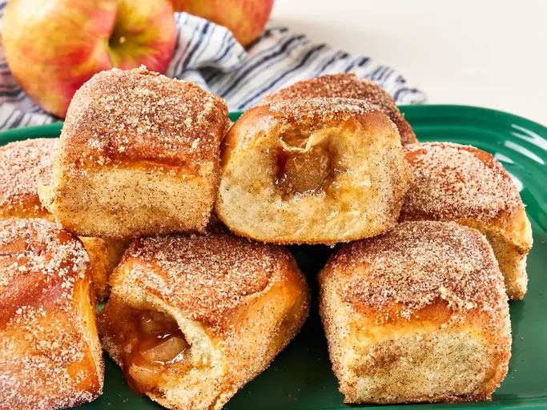

Apple Cider Hawaiian Roll Donuts

Description
These apple cider Hawaiian roll donuts are a quick and easy dessert. The recipe uses pre-made Hawaiian rolls stuffed with apple pie filling and spiced with apple cider drink mix. The rolls are baked until golden, then brushed with butter and rolled in a cinnamon-sugar coating. This simple recipe transforms soft rolls into a treat that tastes like an apple donut in just 30 minutes.
Ingredients
- 12 Hawaiian rolls
- 1 cup apple pie filling
- 3/4 ounce apple cider powdered drink mix
- 5 tablespoons butter, divided
- 1/2 cup sugar
- 1 teaspoon cinnamon
Steps
- Preheat the oven to 350 degrees F (175 degrees C).
- Separate Hawaiian rolls and cut a 1/2-inch slit in the side of each one. Use a finger or the end of a spoon to create a larger opening and a space large enough to fill each roll with about 1 tablespoon filling.
- Roughly chop apple pie filling and add to a bowl. Stir in 1 packet apple cider mix. Spoon filling into the prepared rolls.
- Melt 4 tablespoons butter and brush each roll on all sides with melted butter. Place rolls on a lined baking sheet.
- Bake rolls in the preheated oven until lightly toasted and golden brown, 12 to 14 minutes.
- Meanwhile, stir together remaining apple cider packet, sugar, and cinnamon in a shallow dish and melt remaining butter.
- Brush tops of rolls evenly with melted butter and coat each roll in sugar mixture.
Home Page
Aziz's Recipes Home Page